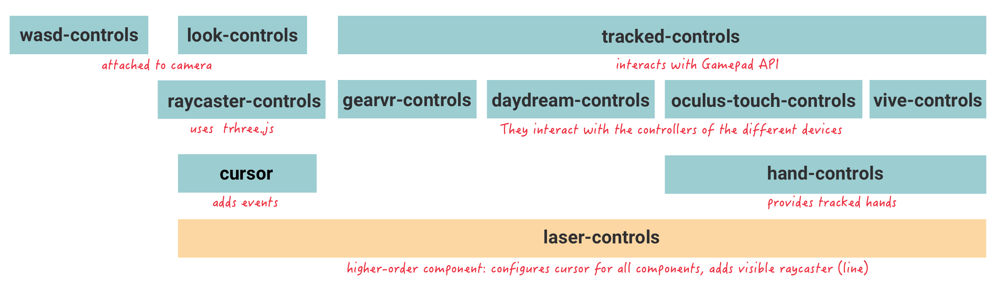
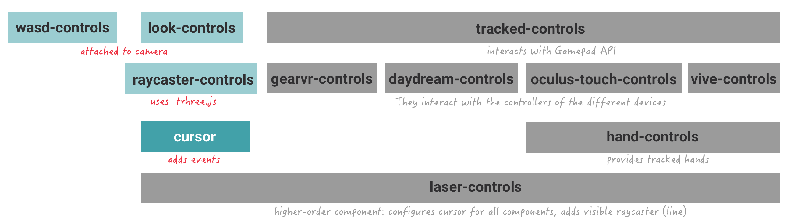
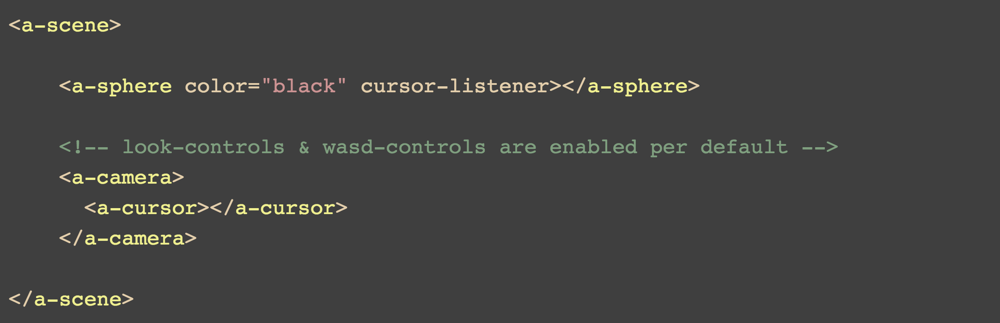
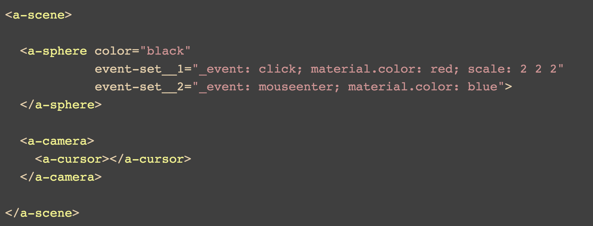

A-Frame Beginners Workshop
An introduction to WebVR
Berlin - 10.08.2017
By Andrés Cuervo & Stefanie Doll
WebVR API
- Detect VR devices and query their capabilities
- Check if the device supports the presentation mode
- Poll the device’s position and orientation
- Display and re-render imagery
on the device
Browser Support

Microsoft Edge
Chrome for Android

Firefox

Chromium

Samsung Internet
Oculus Carmel

Servo

WebVR Polyfill
Supported devices

VR Headsets
Mobile Phone &
Cardboard

Tablets

Desktop
Other Browser API's involved

WebGL
Web Audio
Gampad
Speech
WebRTC
Geolocation
and more...
A-Frame
Is a javascript framework for building VR experiences on the web.
- It's cross-platform ...
- easy to use ...
- and easy to extend!
Entity-Component-System
Entity is an empty container
<a-entity>
Components add a certain apperance, behaviour and/or functionality
System provides the global scope
<a-scene >
Entity Box = Geometry + Material + Position
Entity Ball = Geometry + Material + Position + Velocity + Physics
<a-scene>
Setup of repetitive tasks & components needed
- WebGL & WebVR setup
- Canvas setup
- Default camera & lightning
- Initializes scene rednering and re-rendering
- It loads three.js and webvr-polyfill.js
</a-scene>
Entities, components and primitives
Entities and components
Primitives
Lesson 1
Go to: https://berlin-aframe-workshop.glitch.me
and click on the "Remix this project!" link
Then click "Show live" in the upper left corner and click on Lesson 1.
A-Frame inspector
ctrl + alt + i

Geometries
It provides a basic shape for an entity
Materials — Color
It gives appearance to an entity
Positioning & Rotation
Right-handed coordinate system

Position component
Position component
It places entities at certain spots in 3D space
Position is relative to <a-scene> or the parent-element.
Rotation component
It defines the orientation of an entity
Positioning & Rotation
#### Some other things to know: - default position for entities is "`0 0 0`" - the default camera position is "`0 1.6 0`" - Position is relative to a-scene or to the parent element
Positioning & Rotation
(nested (positioning))
Images and Videos as material
Use the 'src' attribute of the material component
- 360 videos, equirectangular images
- Flat images & videos
- You can use it on all geometries
360 video
Images & tiled images
The power of two
- WebGL expects images to be the power of two
- 2, 4, 8, 16, 32, 64, 128, 256, 512, 1024, 2048, 4096
- If you can't change the ratio / size, use the npot attribute of the material component
- Always use "power of two" images for tiles (repeat)
Importing 3D objects
You can use 3D-Objects in your A-Frame scenes.
Exports from Unity, Blender, Google Blocks, Sketchfab (...) and shared ressources.
Suppoerted file-types
- COLLADA files (.DAE)
- GL Transmission Format (.glTF)
- Wavefront (.obj & .mtl)
Use together with the scale component
Example: Google Blocks Import
Models by "Anna dream brush" & Timothy 'YM' Johnson
Assets
<a-assets> – <a-assets-item>
- A-Frame has a built-in Asset Management System
- Better performance because of caching, preloading & reuseability
- Images, videos, 3D-Models, audio
Mixins
<a-mixin>
- To reuse self-defined sets of component properties
Assets & Mixins – Code example
The ID of the asset or mixin is used as a refenrence on the entity.

Animations
- You can animate different properties and types
- Rotation, position, color, opacity, radius, scale ...
- Speed, easing, repeat, direction...
- Attach
<a-animation>component as a child
Also check out the aframe-animation-component
Animations


Lesson 3
Try to rebuild this scene!
Got back to the course overview and follow the links for Lesson 3.
A Brief Note: Components!
See a pattern?
A-Frame is built on the concept of components:
Javascript that hooks into the component lifecycle (`init`, `tick`, `remove`, etc.).
Allows you to define more complicated behavior to make custom interactions, materials, & more!
A Tiny Component
AFRAME.registerComponent('my-color', {
schema : {
color : { default : '#DDAADD' }
},
init : function () {
this.el.setAttribute('material', 'color', this.data.color)}});
`my-color`
Interact with a scene
- Large variety of platforms, devices & input methods.
- Desktop computers, phones, VR Headsets, 3DoF, 6DoF
- Actions: Grab, throw, rub, flip, poke, stretch, press...
- 11 built-in components for interactions in A-Frame
- ...plus custom controllers
Built-in components
Built-in components
Cursor component
- Provides states on top of the raycaster component
- click, fuse, mousedown, mouseenter, mouseleave, mouseup
- Add your event listeners in Javascript
Cursor component html
Cursor component Javascript
Using the event-set component
Register event listeners without Javascript
https://github.com/ngokevin/aframe-event-set-component Lesson 5
Go back to your remix of
https://berlin-aframe-workshop.glitch.me/
TASK:
Use the aframe-event-set-component
to change the color of the <a-box> on mouseenter and mouseleave.
Thank's for your time.
Keep on building!
Further reading
- Check Browser support on https://webvr.rocks/
- Awesome A-Frame - Collection of resources
- A-Frame School - An interactive course for WebVR